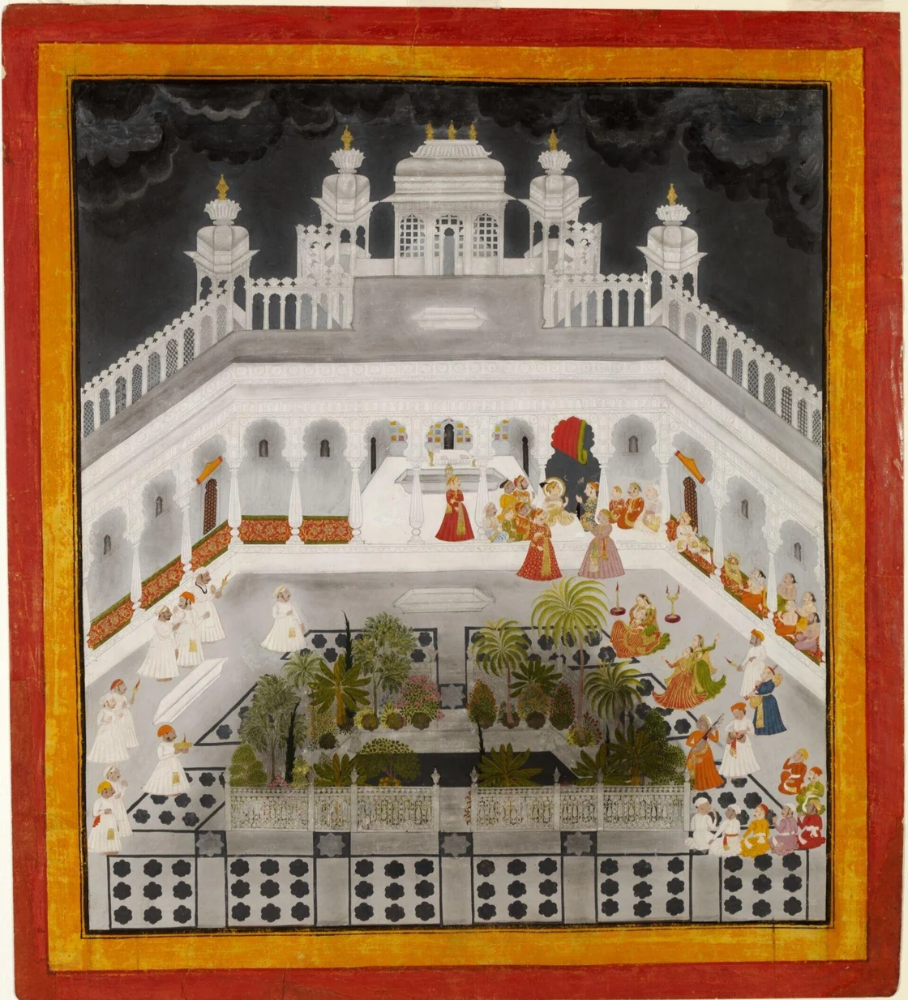
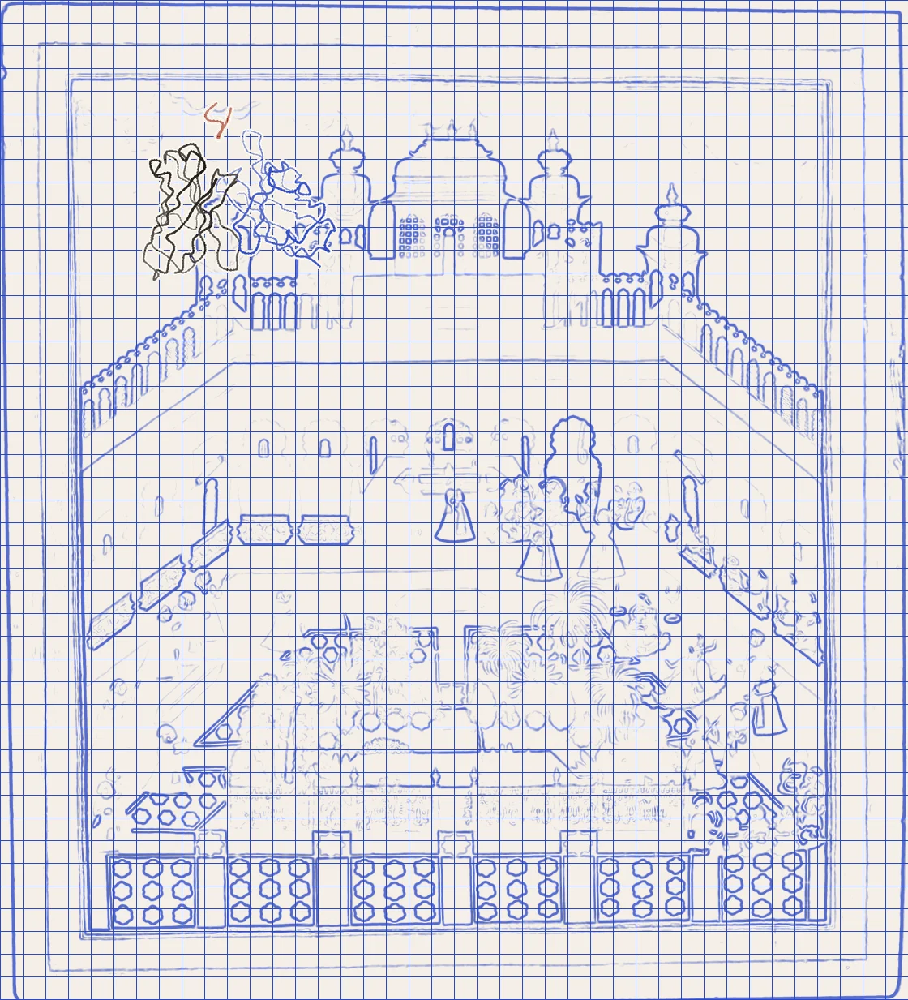

History Research
How institutions decide what counts as authoritative teaching, and what that does to the communities and cities around them — in the early modern Sikh panth, in medieval Italy, and in American medicine.


[found] the antibody, hiding in the sky
A night entertainment in the City Palace, Udaipur · Mewar, c. 1755 · © Victoria and Albert Museum, London · IS.77-1990
Sikh Studies
Katha, transmission, and how the early Khalsa came to speak for the panth. Current work as an Emerging Scholars Research Fellow.
Read →Medieval Italy
Two interactive geospatial narratives mapping how religious institutions shaped the built form of Rome and Florence.
Read →History of Medicine
How legal, clinical, and cultural change reshaped American end-of-life care from the late twentieth century on.
Read →